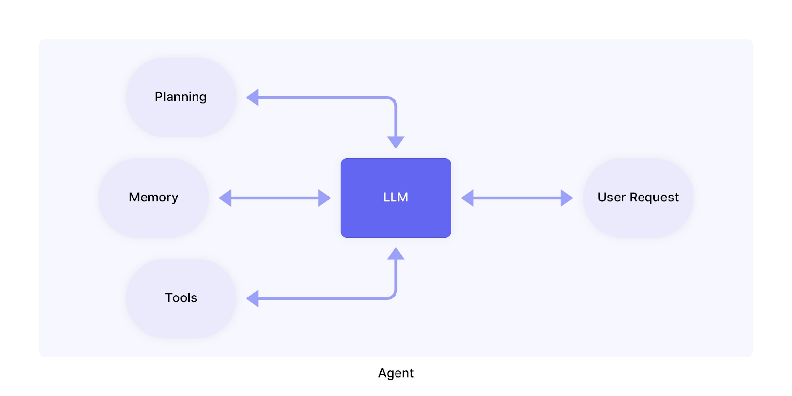
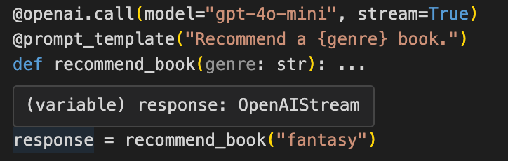
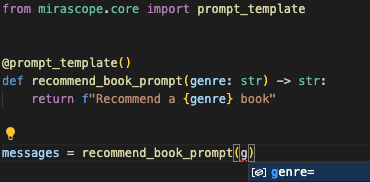

LLM Agents: What They Are, Tools, and Examples¶
We can define an "agent" as a person who acts on behalf of another person or group. However, the definition of agent with respect to Large Language Models (LLMs) is a hotly debated topic with no one definition yet reigning.
We like to refer to an LLM agent as an autonomous or semi-autonomous system that can act on your behalf. The core concept is the use of tools to enable the LLM to interact with its environment through tool use.
Agents can be used to handle complex, multi-step tasks that may require planning, data retrieval, or other dynamic paths that are not necessarily fully or well defined before starting the task.
This goes beyond what an LLM normally does on its own — which is to generate text responses to user queries based on its pre-training — and steps up its autonomy in planning, executing tasks, using tools, and retrieving external data.
What makes LLM agents useful is they can function within workflows that integrate multiple systems and services without having to fully define every step of the process beforehand.
For instance, a standalone LLM can handle a simple query like, “Explain the difference between aerobic and anaerobic exercise,” But if you asked, “Create a personalized weekly workout plan including both aerobic and anaerobic exercise based on my goals and fitness level, and sync it with my calendar,” a standalone LLM wouldn’t be able to coordinate all these steps (primarily because of the "sync with calendar" step).
An LLM agent, on the other hand, could gather inputs like your goals, fitness level, and available times, then use external tools to make API calls and generate a tailored exercise plan that's integrated directly into your calendar.
LLM agents are useful for different real-world applications such as:
- Addressing customer support queries and deciding to pass on complex cases to human agents.
- Debugging, optimizing, and generating code for developers.
- Summarizing research findings, analyzing datasets, and proposing hypotheses to aid researchers in various fields like medicine, engineering, social sciences, etc.
Agents themselves are LLM-based applications that can solve real-world problems requiring more than just pure pre-trained natural language understanding. For example, an LLM agent may be directly integrated into an enterprise's private data in order to provide highly tailored and company-specific outcomes.
You can build agents using modern orchestration frameworks but many users find the unique abstractions of systems like LangChain hard to work with, requiring you to do things their way.
For this reason, we designed Mirascope — a user-friendly Python toolkit that lets you build LLM agents directly in native Python using lightweight modules that you can slot into existing workflows.
In this article, we explain how LLM agents work, their core components and use cases, and the unique challenges they bring. We also show a practical example of how to build a basic agent using Mirascope.
Components of an LLM Agent¶
LLM agents are built around four key parts that work together to enable reasoning, planning, and execution.
These components include:
- LLM
- Planning
- Memory
- Tools

LLM¶
The core of the agent is the LLM itself, functioning as the “brain” that processes inputs, generates responses, and handles the reasoning needed to make decisions.
The LLM is typically guided by a prompt template containing details on how it should operate, the tools it can access, and how to use them.
Often the prompt also customizes the LLM with a specific persona or profile, which defines its role and personality and gives it characteristics or expertise making it better suited for particular tasks or interactions.
Planning¶
Planning refers to the process where the agent figures out the steps needed to complete a task. This process is guided by the predefined prompts or instructions the developer gives.
For instance, if the agent is built for customer support, it might plan by first identifying the user’s question, then retrieving the necessary information, and finally generating a helpful response.
Popular techniques like Chain-of-thought (CoT) and Tree-of-thought (ToT) prompting or decision trees can help structure this process — enabling the agent to think through problems step by step, especially when dealing with complex multi-step tasks.
It can also use feedback mechanisms allowing the agent to iteratively refine its execution plan based on past actions and observations.
These include ReAct for combining reasoning and taking action to enable the LLM to interleave thought, action, and observation steps, or Reflexion for improving language model reasoning skills by equipping them with dynamic memory and self-reflection capabilities.
We've also seen recent advancements in reasoning capabilities with models like OpenAI's o1 and o3 as well as DeepSeek's r1.
Memory¶
Memory allows the agent to retain information from past interactions, ensuring consistency and making it feel more like a real assistant.
It stores details like past user inputs, contextual data, and previous actions to help the agent make more informed decisions in the future.
The simplest form of "memory" is maintaining the message history in a conversation and providing the entire array of messages with each call to the LLM. When building an agent, we always recommend starting with the simplest form factor and only adding complexity as necessary.
Of course, you may have an agent that operates across multiple conversations where it makes less sense to provide the entire message array each time. In such a case, you can store previous messages and try to retrieve only those messages which are relevant to the current task at hand.
Types of memory include:
- Short-term memory for keeping track of an ongoing discussion using the temporary context window that’s wiped clean as soon as the discussion is over.
- Long-term memory for storing an agent’s insights and past interactions over longer periods for improved decision-making; this sometimes uses an external vector store for efficient search and retrieval.
In all cases, "memory" will have to be included as messages in the call to the LLM for it to have access to the memories (since it's stateless).
It's worth noting that we're still extremely early when it comes to building LLM agents, so off-the-shelf memory systems may not work properly for your specific use-case. We recommend taking the time to identify what type of memory system your agent will benefit from the most, using external libraries for convenience of implementation rather than for implementing the full system for you.
Tools¶
This enables the agent to go beyond just understanding and responding to text, which out-of-the box LLM interfaces like ChatGPT already do, by connecting to external tools, APIs, or systems to do tasks like retrieving data, executing commands, or interacting with databases.
Types of tools can include:
- External APIs for enabling web searches, code interpreters, weather, and other services for providing access to real-time data, calculations, and more.
- Databases storing structured information that an agent can query.
- (Other) LLMs that have been fine-tuned or are otherwise specialized for certain tasks.
4 Frameworks for Creating Agents¶
Orchestration frameworks offer the structure and pre-built components to help you build, manage, and deploy LLM agents.
In particular, they ease the integration of tools that allow agents to interact with external environments and do tasks. As discussed above, tools can include APIs for search engines, code interpreters, databases, and other external resources.
Below are some of the most notable examples of frameworks:
Mirascope¶
Mirascope lets you build autonomous or semi-autonomous systems that handle tasks, make decisions, and interact with users to integrate with tools, manage state, and even bring humans into the loop when needed.
Mirascope provides several key benefits, such as:
LLM Development in Native Python¶
Mirascope uses familiar Python constructs and avoids homegrown abstractions that other frameworks sometimes introduce. This allows developers with Python experience to start building right away without having to master new abstractions.
An example of such an abstraction is the runnable in LangChain, which, though useful for creating and invoking custom chains, often masks the underlying logic of how it works, making it harder for you to customize and debug.
Mirascope, in contrast, lets you manage chain execution with Python’s computed fields, which allows you to define and sequence the logic explicitly while offering greater control and transparency in execution.
Convenient LLM Calling, Tool Invocation, and Automatic Versioning¶
Instead of manually coding JSON yourself when defining tools, Mirascope does this for you automatically using Pydantic.
For example, tools can be defined directly from a Python docstring as shown below, where the function get_city_population is converted into a tool with arguments defined in the docstring.
We designate that function as a tool by listing it as a parameter in the openai.call decorator:
from mirascope.core import openai, prompt_template
def get_city_population(city: str) -> str:
"""Get the current population for `city` and prints it.
Args:
city: The name of the city, e.g., New York City.
"""
if city == "New York City":
return f"The current population of {city} is approximately 8.8 million."
elif city == "Los Angeles":
return f"The current population of {city} is approximately 4 million."
else:
return f"I'm sorry, I don't have the population data for {city}."
@openai.call("gpt-4o-mini", tools=[get_city_population])
@prompt_template("What's the population of {city}")
def city_population(city: str): ...
response = city_population("New York City")
if tool := response.tool:
print(tool.call())
# > The current population of New York City is approximately 8.8 million.
If the function doesn’t contain a docstring or can’t be changed for some reason (like if it’s third-party code) then you can use Mirascope’s BaseTool class to define the tool.
Below, we specify the GetCityPopulation class to be a tool with a defined argument:
from mirascope.core import BaseTool, openai, prompt_template
from pydantic import Field
def get_city_population(city: str) -> str:
"""Fetch the current population of a city."""
if city == "New York City":
return f"The current population of {city} is approximately 8.8 million."
elif city == "Los Angeles":
return f"The current population of {city} is approximately 4 million."
else:
return f"I'm sorry, I don't have the population data for {city}."
class GetCityPopulation(BaseTool):
"""Get the current population for a given city."""
city: str = Field(
...,
description="The name of the city, e.g., New York City.",
)
def call(self):
return get_city_population(self.city)
@openai.call("gpt-4o", tools=[GetCityPopulation])
@prompt_template("What's the population of {city}")
def city_population(city: str): ...
response = city_population("New York City")
if tool := response.tool:
print(tool.call())
# > The current population of New York City is approximately 8.8 million.
Tool definitions in both examples are automatically generated at runtime.
Mirascope also embraces developer best practices like colocation, where function calls and their parameters — such as prompts, model parameters, and other configuration details are kept together within a single workflow.
You can see this in the code example above, where the @openai.call decorator encapsulates parameters such as the model name ("gpt-4o-mini") and tool definitions (tools=[GetCityPopulation]) within the context of the city_population call.
Our prompt management tool Lilypad automatically versions and traces every LLM function call to ensure code readability and maintainability and to facilitate testing.
For instance, you can version an LLM call simply by adding the generation decorator to ensure that any call the function makes is traced against the version:
import lilypad
from openai import OpenAI
client = OpenAI()
@lilypad.generation()
def answer_question(question: str) -> str:
d completion = client.chat.completions.create(
model="gpt-4o-mini",
messages=[{"role": "user", "content": question}],
)
return str(completion.choices[0].message.content)
if __name__ == "__main__":
lilypad.configure()
answer = answer_question("What's the population of New York?")
print(answer)
In the code above, answer_question will be versioned and traced when called, and changing anything inside that function will automatically increment the version (even when changing the model version in the call itself).
Validating LLM Responses¶
Mirascope makes defining, structuring, and validating outputs easier with its response_model, an extension of Pydantic’s BaseModel.
Response models handle output validation outside of runtime and add type safety under the hood, allowing you to catch errors earlier in development.
In this example, we define the expected structure of the language model’s response (Movie) and add this as a response model in the LLM call to enforce its structure in order to more easily validate the model’s output:
from mirascope.core import openai
from pydantic import BaseModel
class Movie(BaseModel):
"""An extracted movie."""
title: str
director: str
@openai.call("gpt-4o-mini", response_model=Movie)
def extract_movie(text: str) -> str:
return f"Extract {text}"
movie = extract_movie("Inception directed by Christopher Nolan")
print(movie)
# Output: title='Inception' director='Christopher Nolan'
Mirascope’s output validation is also shown directly in your IDE. Below, a response from an OpenAI call is typed as an OpenAIStream object.
When you hover over a variable, it shows its type so you know what you’re working with:

It also provides autosuggestions:

LangChain¶
LangChain is one of the most popular frameworks for building LLM applications and is known for its focus on chaining multiple LLM calls and integrating with external tools like APIs or databases.
The framework supports building agents with advanced capabilities such as tool use, memory management, and task execution. Its wide range of modules makes it a go-to choice for developers tackling complex workflows.
AutoGen¶
AutoGen is an open-source framework developed by Microsoft that helps developers create AI systems where multiple agents can work together to complete tasks.
It offers a high-level multi-agent conversation framework to simplify building distributed, and scalable applications.
AutoGen agents can communicate asynchronously, connect to various tools and APIs, and work across different programming languages like Python and .NET.
This versatility makes it ideal for developing complex workflows that can be customized for specific use cases and scaled as needed.
CrewAI¶
CrewAI is an open-source Python framework designed to create multi-agent systems that mirror human team dynamics.
It provides abstractions for tasks, processes, and collaboration, allowing developers to define agents with specific roles and goals.
The framework also includes memory management features to help agents build on past interactions and function more cohesively over time.
Additionally, CrewAI integrates with various LLMs, including LangChain’s ecosystem. This means you can leverage LangChain’s tools and resources alongside CrewAI to enhance your agent workflows.
5 Limitations of LLM Agents¶
While LLM agents excel in tasks such as problem-solving, dynamic planning, and leveraging external tools, they nonetheless have limitations that can impact how well they perform, especially where sophisticated understanding or long-term contextual awareness is needed.
Some of the key issues include:
Limited Context Retention¶
Agents can only process a certain amount of information at a time due to the LLM’s context window. Once this limit is exceeded, earlier parts of the conversation or task-related details may be forgotten.
For instance, in a lengthy chat, an agent could lose track of key instructions or miss something the user said earlier. In such cases, vector stores (commonly associated with retrieval augmented generation, or RAG) can help by storing and retrieving relevant chunks of text or past conversations.
However, while this does help with addressing the context window limit, it isn’t foolproof as other gaps may emerge, like a relevant chunk failing to be retrieved from a vector store, or older information in a conversation being deprioritized in relation to new information.
Dependence on Training Data¶
LLM agents rely heavily on the data they were trained on. If the training data is outdated, biased, or incomplete, this might be reflected in the agent’s responses.
Likewise, if the training data lacks sufficient examples for a specific domain, the agent may struggle to provide accurate or nuanced responses in that area.
You can address some of these issues by fine-tuning the model for specific tasks or combining it with RAG systems to fetch more relevant, up-to-date information.
However, the overall quality and balance of the training data remain important to the agent’s performance.
Difficulty with Long-Term Planning¶
LLM agents often struggle with tasks that require planning or strategizing over extended periods.
Since their processing occurs within a limited context window, earlier steps or goals may be forgotten if the task is complex or the conversation progresses.
This lack of continuity makes them less effective in managing complex tasks that demand foresight, goal alignment, or adaptability.
One way to ease this limitation is by breaking tasks into smaller subtasks and storing key details externally (like in a vector store), allowing the agent to reintroduce important information as needed.
Dependence on Good Prompts¶
The effectiveness of an LLM agent depends heavily on how well it’s prompted. If a prompt lacks detail, structure, or specificity, the agent may produce responses that fail to address the intended goal.
Since agents don’t possess inherent reasoning capabilities to interpret or refine unclear instructions, users have to invest effort and care in creating precise and well-thought-out prompts.
Difficulty Adapting to Different Roles¶
While LLM agents can be configured for specific tasks, they sometimes lack the flexibility to switch between different roles or take on entirely different roles without additional adjustments.
For example, an agent designed to act as a customer service assistant may perform poorly if asked to function as a technical advisor without intentional prompting or fine-tuning.
This makes it challenging to use a single agent effectively across varying scenarios without additional effort to customize and refine its behavior.
Building a Chatbot for Efficient Onboarding¶
Below we use an open-source model (Llama 3.1 8B) to build a local chatbot that onboards new hires by querying a company’s onboarding documents (e.g., HR policies, welcome guides, etc.) using a RAG setup.
We’ll use Mirascope for prompting and LlamaIndex for embedding, retrieval, and reranking.
A typical LLM pipeline uses retrieved data or documents to answer queries but here we’re adding an agent to decide on whether retrieval is needed in the first place.
That means if our agent (here a chatbot) believes it already has enough context or can handle a request in another way, it might skip retrieval entirely.
You can find more details about the code below in our tutorial library.
Prerequisites:
- A local environment with Python 3
- An installed and configured LLM (e.g., Ollama)
- Your documents (e.g., onboarding files)
1. Set Up the Environment¶
pip install "mirascope[openai]"
pip install llama-index llama-index-llms-ollama llama-index-embeddings-huggingface huggingface
Here, we install:
- The
mirascopelibrary with dependencies for OpenAI support. - The
llama-indexmodule for running local Ollama models, as this setup uses Ollama as the LLM backend. llama-indexmodules for running the Hugging Face Transformers library and embeddings for semantic search and retrieval tasks for our RAG.
2. Configure the Agent¶
Below, we configure the agent's language understanding and memory capabilities (via embeddings) to enable it to process queries and retain a memory of prior interactions..
from llama_index.core import (
Settings,
SimpleDirectoryReader,
VectorStoreIndex,
)
from llama_index.legacy.embeddings import HuggingFaceEmbedding
from llama_index.legacy.llms import Ollama
# Configure global settings for llama-index
Settings.llm = Ollama(model="llama3.1") # Using a local Llama 3.1 (8B) model via Ollama
Settings.embed_model = HuggingFaceEmbedding(model_name="BAAI/bge-small-en-v1.5")
We import LlamaIndex modules for:
- Globally configuring LlamaIndex (
Settings). - Reading documents from a directory (
SimpleDirectoryReader). - Storing vector embeddings and enabling semantic search and retrieval (
VectorStoreIndex). - Generating embeddings using Hugging Face models.
- Working with the Ollama framework.
3. Ingest and Embed Documents¶
In this step, we use SimpleDirectoryReader to load our onboarding docs (e.g., PDFs or text files) and generate embeddings that we store locally.
While this example uses a SimpleVectorStore, you can easily swap it out for a cloud vector store like Pinecone.
from llama_index.core.storage import StorageContext
from llama_index.core.vector_stores import SimpleVectorStore
# Replace "PATH/TO/ONBOARDING_DOCS" with the directory containing your onboarding text/files
documents = SimpleDirectoryReader("PATH/TO/ONBOARDING_DOCS").load_data()
vector_store = SimpleVectorStore()
storage_context = StorageContext.from_defaults(vector_store=vector_store)
# Build an index from the documents
index = VectorStoreIndex.from_documents(documents, storage_context=storage_context)
# Persist the index and vector store so we can reload it later
index.storage_context.persist()
SimpleDirectoryReader both loads and extracts useful text and metadata from each file.
VectorStoreIndex then creates a searchable index from the documents by splitting these into chunks and transforming these into vectors (or “embeddings”) for storage in the vector store.
4. Load Embeddings¶
Once the embeddings and index are persisted (in the previous step), we can load them back into memory to handle queries without reindexing every time, which is useful especially when working with large datasets:
from llama_index.core import load_index_from_storage
# Recreate a storage context pointing to the persisted index
storage_context = StorageContext.from_defaults(persist_dir="storage")
loaded_index = load_index_from_storage(storage_context)
# This query_engine object allows us to run semantic queries over the docs
query_engine = loaded_index.as_query_engine()
After reloading the index and embeddings, we create query_engine to process natural language queries and return results based on the stored embeddings.
5. Customize Ranking and Retrieval¶
To improve the quality of retrieved documents, we add a reranking step. This is still part of the RAG workflow, but it further supports the agent’s decision-making by ensuring it gets the best options to choose from:
import re
from llama_index.core.base.response.schema import Response
from llama_index.core.postprocessor import LLMRerank
# Define a custom function to parse reranking results
def custom_parse_choice_select_answer_fn(
answer: str, num_choices: int, raise_error: bool = False
) -> tuple[list[int], list[float]]:
"""
Custom parse choice select answer function.
Converts the model's reranking output into numeric ranks/relevances.
"""
answer_lines = answer.split("\n")
answer_nums = []
answer_relevances = []
for answer_line in answer_lines:
line_tokens = answer_line.split(",")
if len(line_tokens) != 2:
if not raise_error:
continue
else:
raise ValueError(
f"Invalid answer line: {answer_line}. "
"Answer line must be of the form: answer_num: , answer_relevance:"
)
split_tokens = line_tokens[0].split(":")
if (
len(split_tokens) != 2
or split_tokens[1] is None
or not split_tokens[1].strip().isdigit()
):
continue
answer_num = int(line_tokens[0].split(":")[1].strip())
if answer_num > num_choices:
continue
answer_nums.append(answer_num)
# Extract the relevance score
_answer_relevance = re.findall(r"\d+", line_tokens[1].split(":")[1].strip())[0]
answer_relevances.append(float(_answer_relevance))
return answer_nums, answer_relevances
def get_documents(query: str) -> str:
"""
The "get_documents" tool retrieves the most relevant pieces of
onboarding docs based on the user's query, optionally reranking them.
"""
query_engine = loaded_index.as_query_engine(
similarity_top_k=10,
node_postprocessors=[
LLMRerank(
choice_batch_size=5,
top_n=2,
parse_choice_select_answer_fn=custom_parse_choice_select_answer_fn,
)
],
response_mode="tree_summarize",
)
response = query_engine.query(query)
if isinstance(response, Response):
return response.response or "No documents found."
return "No documents found."
Above, we import the necessary modules for:
- Structuring model responses (
Response) - Reranking results from the query engine (
LLMRerank)
We use get_documents to fetch relevant content, and the agent (defined in the next step) calls it and passes in a query. The function in turn uses query_engine to retrieve and re-rank documents.
The top-ranked documents are summarized and returned to the user. If no documents are relevant, get_documents returns a fallback message.
6. Build the Agent Class¶
Finally, we define a chatbot class called OnboardingBot that uses the local LLM and get_documents to provide context-based answers about onboarding policies:
- The
_call()method composes a system/user prompt that includes the context retrieved usingget_documentsas a computed field, which ensures that calling this method will retrieve the context based on the question internally to the function before calling the LLM. - The
run()method starts an interactive loop, letting a user ask questions about our company’s onboarding procedures.
from mirascope.core import openai
from openai import OpenAI
client = OpenAI(
base_url="http://localhost:11434/v1",
api_key="ollama",
)
class OnboardingBot(BaseModel):
@openai.call("llama3.1", client=client)
@prompt_template(
"""
SYSTEM:
You are a helpful AI that is an expert at answering questions
about the company's onboarding docs. Here is relevant context.
Context:
{context}
USER:
{question}
Please provide a helpful, concise answer.
"""
)
def _call(self, question: str) -> openai.OpenAIDynamicConfig:
context = get_documents(question)
return {"computed_fields": {"context": context}}
def run(self):
while True:
question = input("(User): ")
if question.strip().lower() in ["exit", "quit"]:
print("Goodbye!")
break
answer = self._call(context, question)
print(f"(Assistant): {answer.content}")
# Start the chatbot
OnboardingBot().run()
Example Interaction¶
Here, a user can prompt the bot with an open-ended question about onboarding details and get a response.
Output:
Although we’ve included only one tool (get_documents), adding multiple tools (e.g., a search function, a calculator, or an API call to other LLMs or agents) would let your agent choose the best action to perform before finalizing its answer.
Build Your Agentic Systems Using Mirascope¶
Mirascope’s modular and Python-first design simplifies the process of building, deploying, and iterating on LLM agents, giving you full control over prompting, context management, and LLM interactions.
It integrates with your existing projects and lets you enhance your applications by leveraging other libraries' functionality as needed.
Want to learn more? You can find Mirascope code samples both on our documentation site and on our GitHub page.